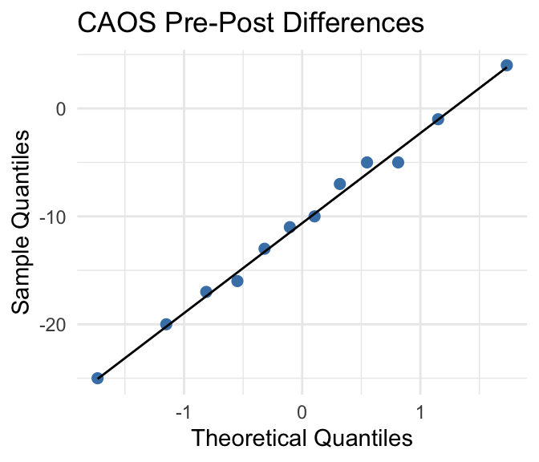
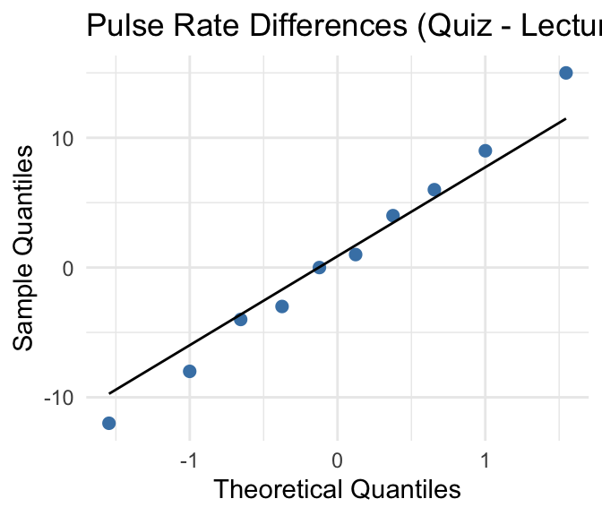

5.5 Paired Difference in Means
Key Concepts
- Distinguish between separate samples and paired data when comparing two means
- Identify the advantages of using paired data when estimating a difference in means
- Use a \(t\)-distribution, when appropriate, to compute a confidence interval for a difference in means based on paired data
- Use a \(t\)-distribution, when appropriate, to test a hypothesis about a difference in means based on paired data
Inference for paired data
When analyzing paired data, we want to consider the average of the differences not the difference of the averages.
To decide between a two-sample \(t\)and paired difference \(t\), consider how many times each case was measured. If each case is measured once, and we break the cases into two groups, we use two-sample \(t\)procedures. If each case is measured twice, we use paired difference \(t\)procedures.
When examining differences in averages, typically, we use one of two methods. One option is to use the tools we discussed for the difference in averages. However, if there is a reason that the groups are not separate groups, then there is a better technique to use. If there is some kind of natural pairing between subjects in a study, then we can use techniques based on the concept of paired differences. Most often, paired differences occur when the subjects of the study receive two different levels of a factor (most commonly a control and a treatment). However, another way this appears is in a study in which two participants have been paired based on a number of different characteristics.
Class Example 5.5.1: Deciding between difference in averages and paired difference
For each of the following, identify the cases for the study and decide if it would be more appropriate to use a difference in averages or paired difference.
- In a medical study to learn about the difference in the efficacy of generic versus brand name blood pressure medications, 50 men and 50 women were randomly assigned to receive either a generic medication or a brand name medication.
- Researchers want to learn about the average age differences between partners who have been together more than 10 years. They randomly select 50 sets of partners and ask them their age.
- In a study on the average difference in calories between servings of strawberry and vanilla yogurt, a food scientist randomly selected 12 brands of yogurt and recorded the calories in their strawberry and vanilla yogurts.
- The Office of Greek Life randomly selects 45 fraternity and sorority members and looks to see if there is a difference in the average GPAs for fraternities vs sororities.
Conditions
In this section, we will use a subscript \(d\)to indicate that we are working with differences.
We either need
-\(n_d \ge 30\)or - the population of differences to be approximately normal
In order to be able to use the \(t\)-distribution for a difference in averages, you need to be sure that the differences satisfy the conditions for an average. Recall from the 6.4 – 6.6 notes:
- For a large enough sample size (\(n_d \ge 30\)), you can use the \(t\)-distribution
- If\(n_d < 30\), then the \(t\)-distribution is only a good approximation if the population is approximately normal.
CI for an average difference
Provided that the sample size is large enough so that\(n_d \ge 30\)or the population is approximately normal, a confidence interval for the average difference in the population \(\mu_d\)can be constructed using
\[ \overline{x}_d \pm t^* \frac{ s_d }{ \sqrt{ n_d } } \]
where \(\overline{x}_d\)is average of the differences in the sample and\(t^*\)is the appropriate confidence multiplier from a \(t\)-distribution with\(n_d - 1\)degrees of freedom.
Hypothesis test for an average difference
Provided that the sample size is large enough so that\(n_d \ge 30\)or the population is approximately normal, then according to the CLT
\[ t = \frac{ \overline{x}_d }{ s_d / \sqrt{ n_d } } \]
follows a \(t\)-distribution with\(n_d - 1\)degrees of freedom.
We can use this fact to conduct a hypothesis test. As with the hypothesis test we have discussed thus far, there are a specific set of steps to conduct a hypothesis test using the CLT.
Step 1: Check conditions for the test
Check whether\(n_d \ge 30\)or the population of differences is approximately normal.
Step 2: State the hypotheses
For a difference in averages, the null hypothesis always has the form
\[ H_0: \mu_d = 0 \]
The alternative hypothesis has one of the following three forms:
\[ \begin{aligned} H_a: &\mu_d < 0\\ H_a: &\mu_d > 0\\ H_a: &\mu_d \neq 0 \end{aligned} \]
Step 3: Calculate the test statistic
To conduct the hypothesis test using the CLT, we use a standardized test statistic of
\[ t = \frac{ \overline{x}_d }{ s_d / \sqrt{ n_d } } \]
which follows a \(t\)-distribution with\(n_d - 1\)degrees of freedom.
Step 4: Find the \(p\)-value and give a sketch to illustrate the \(p\)-value
To find the \(p\)-value, you must use technology to find what proportion of the \(t\)-distribution is more extreme than the test statistic (in the direction of the alternative hypothesis). If your alternative is two-sided, then you multiply the one-sided \(p\)-value by 2. The sketch is the same as for a single mean (sections 6.4 – 6.6).
Step 5: State your decision and interpret in the context of the hypotheses
As with the randomization hypothesis test, you make your decision based upon the \(p\)-value from step 3.
- If \(p\)-value\(< \alpha\)
- Decision: reject\(H_0\),
- Interpretation: We have significant evidence to suggest that the alternative hypothesis is correct.
- If \(p\)-value \(\ge \alpha\)
- Decision: fail to reject\(H_0\)
- Interpretation: We do not have significant evidence to suggest that the alternative hypothesis is correct.
You should always write your interpretation in the context of the original hypothesis.
Class Example 5.5.2: CAOS Comparisons
The CAOS (Comprehensive Assessment of Outcomes in Statistics) exam is an online multiple-choice test on concepts covered in a typical introductory statistics course. Students take one version before the start of the course and another version after the course ends. The data are summarized in the following QQ plot and SPSS output.
- Using the output, record the 95% confidence interval for the average difference in test scores? Interpret this interval.
- Conduct a test to determine if the test scores change, on average, between the pre- and post-test. Use \(\alpha=0.05\).
Class Example 5.5.3: Body image and weight preoccupation
A study was conducted to determine how males and females report their weight and height. 82 males and 99 females were asked their height and weight, then height and weight were measured for each participant. (Davis, C. (1990). “Body image and weight preoccupation: A comparison between exercising and non-exercising women.” Appetite, 15, 13–21.)
The study reported that “women appear to accurately report their weight; we found no evidence of a difference between weight and reported weight (\(\overline{x}_d = 1.62\)lbs,\(s_d=10.14\),\(t=1.45\),\(p\)-value: 0.1513).” The study also reported that “men, on the other hand, appear to underestimate their weight (\(\overline{x}_d = -0.59\)lbs,\(s_d = 2.79\),\(t=-2.13\),\(p\)-value: 0.036).” Finally, the study went on to say that “there is also a significant difference between men and women when measuring the differences in height and reported height. Men overestimate their height (\(\overline{x}_d = 1.76\)in,\(s_d=2.17\),\(t=7.41\),\(p\)-value\(< 0.001\)) while women do not overestimate their height (\(\overline{x}_d = 1.28\)in,\(s_d=11.04\),\(t=1.15\),\(p\)-value: 0.2517).”
There are five statements in this study that indicate statistical findings. For each of the following, evaluate the validity of the claim based on the statistical evidence, and correct the statement if necessary. Only two of the conclusions are correct.
- Women appear to accurately report their weight; we found no evidence of a difference between weight and reported weight.
- Men, on the other hand, appear to underestimate their weight.
- Men overestimate their height.
- Women do not overestimate their height.
- There is also a significant difference between men and women when measuring the differences in height and reported height.
Class Example 5.5.4: Pulse rates in class
Do you think your pulse rate is higher when you are taking a quiz than when you are sitting in a lecture? The data in Table 6.27 show pulse rates collected from 10 students in a class lecture and then from the same students during a quiz. The data are summarized in the following output.

- Record the 95% confidence interval for the average difference in pulse rates? Interpret this interval.
- Conduct a test to determine if pulse rates are greater, on average, during a quiz than during a lecture. Use \(\alpha=0.05\).